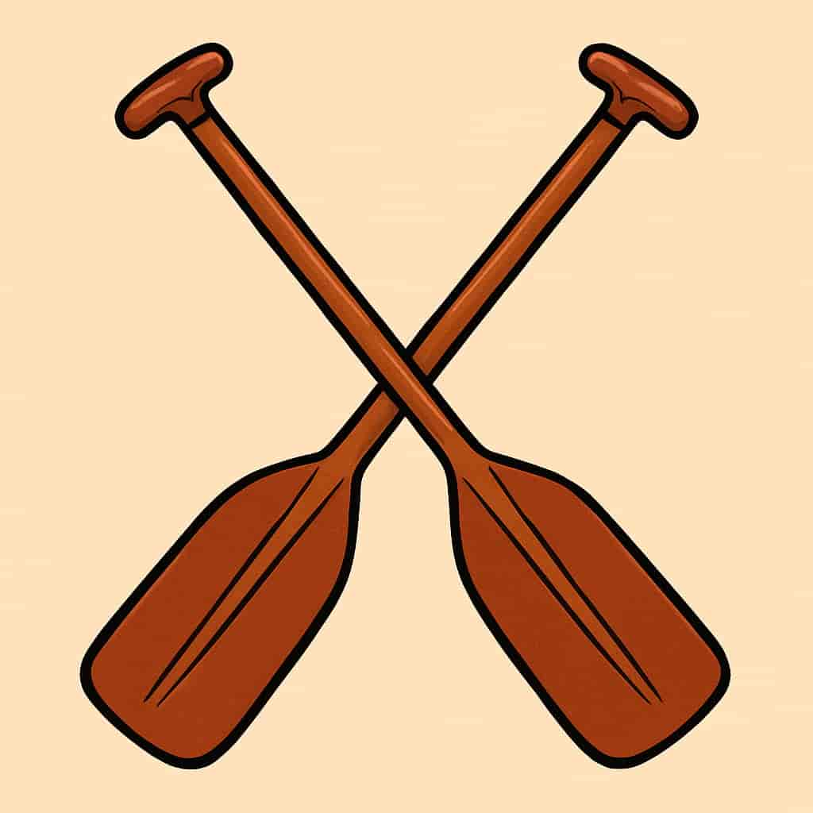

About Us

"We’re more than a rafting company — we’re a crew built for adventure."
- Jared Waters
History
Ridges began with a group of friends chasing whitewater every chance they got. What started as weekend escapes turned into a deeper connection with the river and each other.
Over time, we built a community around shared adventure, trust, and a few too many soaked boots. Today, Ridges is a tribute to that journey — from quiet bends to roaring drops.
Adventure Awaits you